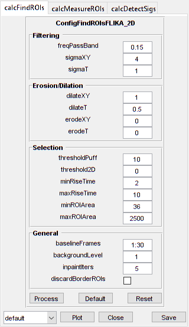

CellScan
Analyse cellular signals
Contents
Usage
OBJ = CellScan(NAME, RAWIMG, CONFIG, CHANNEL)
Arguments
- NAME is the name for this CellScan object.
- RAWIMG is the RawImg object that will be used to create the CellScan object.
- CONFIG contains the configuration parameters needed for the calcFindROIs, calcMeasureROIs and calcDetectSigs objects.
- CHANNEL is the channel number to use for analysis.
Details
CellScan objects are used to analyse dynamic fluorescence signals of cellular origin (i.e. calcium dyes and genetic sensors, metabolite sensors, etc.)

See Also
- CellScan class documentation
- ConfigCellScan class documentation
- ConfigFindROIsDummy class documentation
- ConfigFindROIsFLIKA class documentation
- ConfigFindROIsFLIKA_2D class documentation
- ConfigFindROIsFLIKA_2p5D class documentation
- ConfigFindROIsFLIKA_3D class documentation
- ConfigMeasureROIsDummy class documentation
- ConfigDetectSigsDummy class documentation
- ConfigDetectSigsClsfy class documentation
- CalcFindROIsDummy class documentation
- CalcFindROIsFLIKA class documentation
- CalcFindROIsFLIKA_2D class documentation
- CalcFindROIsFLIKA_2p5D class documentation
- CalcFindROIsFLIKA_3D class documentation
- CalcMeasureROIsDummy class documentation
- CalcDetectSigsDummy class documentation
- CalcDetectSigsClsfy class documentation
- ImgGroup class documentation
- ImgGroup quick start guide
Examples
The following examples require the sample images and other files, which can be downloaded manually, from the University of Zurich website (http://www.pharma.uzh.ch/en/research/functionalimaging/CHIPS.html), or automatically, by running the function utils.download_example_imgs().
Create a CellScan object interactively
The following example will illustrate the process of creating a CellScan object interactively, starting with calling the constructor.
% Call the CellScan constructor
cs01 = CellScan()
Since no RawImg has been specified, the first stage is to select the type of RawImg to create. Press three and then enter to select the SCIM_Tif.
----- What type of RawImg would you like to load? -----
>> 1) BioFormats
2) RawImgDummy
3) SCIM_TifSelect a format: 3
Then, use the interactive dialogue box to select the raw image file cellscan_scim.tif, which should be located in the subfolder tests>res, within the CHIPS root directory.

Use the interactive dialogue box to select the dummy calibration (calibration_dummy.mat):

The next stage is to define the 'meaning' of the image channel(s). The channel represents a cytosolic calcium sensor in astroytes. Press 1 and then enter to complete the selection.
----- What is shown on channel 1? -----
>> 0) <blank>
1) Ca_Cyto_Astro
2) Ca_Memb_Astro
3) Ca_Neuron
4) cellular_signal
5) FRET_ratioAnswer: 1
Since CellScan objects require a method for ROI identification, a method for ROI measurement, and a method for signal detection, we have to specify our choice.
CellScan defaults to a whole frame analysis (i.e. one ROI covers the whole frame). We'd like to use 3D FLIKA instead, because we want to identify ROIs based on activity. Press 6 and then enter to complete the selection.
----- Which ROI detection method would you like to use? -----
>> 1) whole frame
2) load ImageJ ROIs
3) load mask from .tif or .mat file
4) 2D FLIKA (automatic ROI selection)
5) 2.5D FLIKA (automatic ROI selection)
6) 3D FLIKA (automatic ROI selection)
7) CellSort (automatic ROI selection)Select a detection method, please: 6
The next stage is to specify the ROI measuring method. CellScan uses simple baseline calculation as the default. Press enter to complete the selection.
----- Which ROI measuring method would you like to use? -----
>> 1) simple baseline normalised
Select a measuring method, please:
The last stage is to specify the signal detection method. We want to classify signals based on shape and to do some basic measurements like amplitude, etc. Press 2 and then enter to complete the selection.
----- Which signal detection method would you like to use? -----
>> 1) no signal detection
2) detect + classify signalsSelect a detection method, please: 2
We have now created a CellScan object interactively.
cs01 =
CellScan with properties:
calcFindROIs: [1x1 CalcFindROIsFLIKA_3D]
calcMeasureROIs: [1x1 CalcMeasureROIsDummy]
calcDetectSigs: [1x1 CalcDetectSigsClsfy]
channelToUse: 1
plotList: [1x1 struct]
state: 'unprocessed'
name: 'cellscan_scim'
rawImg: [1x1 SCIM_Tif]The process is almost exactly the same to create an array of CellScan objects; when the software prompts you to select one or more raw images, simply select multiple images by using either the shift or control key.
Prepare a RawImg for use in these examples
% Prepare a rawImg for use in these examples fnRawImg = fullfile(utils.CHIPS_rootdir, 'tests', 'res', ... 'cellscan_scim.tif'); channels = struct('Ca_Cyto_Astro', 1); fnCalibration = fullfile(utils.CHIPS_rootdir, 'tests', 'res', ... 'calibration_dummy.mat'); calibration = CalibrationPixelSize.load(fnCalibration); rawImg = SCIM_Tif(fnRawImg, channels, calibration);
Opening cellscan_scim.tif: 100% [==================================]
Create a CellScan object without any interaction
% Create a CellScan object without any interaction nameCS02 = 'test CS 02'; configFind = ConfigFindROIsFLIKA_3D(); configMeasure = ConfigMeasureROIsDummy(); configDetect = ConfigDetectSigsDummy(); configCS = ConfigCellScan(configFind, configMeasure, configDetect); channelToUse = 1; cs02 = CellScan(nameCS02, rawImg, configCS, channelToUse)
cs02 =
CellScan with properties:
calcFindROIs: [1×1 CalcFindROIsFLIKA_3D]
calcMeasureROIs: [1×1 CalcMeasureROIsDummy]
calcDetectSigs: [1×1 CalcDetectSigsDummy]
channelToUse: 1
plotList: [1×1 struct]
state: 'unprocessed'
name: 'test CS 02'
rawImg: [1×1 SCIM_Tif]
Create a CellScan object array
% Create a CellScan object array rawImgArray(1:3) = copy(rawImg); rawImgArray = copy(rawImgArray); csArray = CellScan('test CS Array', rawImgArray, configCS, channelToUse)
csArray =
1×3 CellScan array with properties:
calcFindROIs
calcMeasureROIs
calcDetectSigs
channelToUse
plotList
state
name
rawImg
Create a CellScan object with a custom config
% Create a CellScan object with a custom config configFindCustom = ConfigFindROIsFLIKA_2D('baselineFrames', 30, ... 'freqPassBand', 0.15, 'sigmaXY', 4, 'dilateXY', 1, ... 'thresholdPuff', 10, 'minRiseTime', 2, 'maxRiseTime', 10, ... 'minROIArea', 36); configMeasureCustom = ConfigMeasureROIsDummy('baselineFrames', 30); configDetectCustom = ConfigDetectSigsClsfy('baselineFrames', 30, ... 'thresholdSP', 9, 'lpWindowTime', 6, 'spPassBandMin', 0.015, ... 'spPassBandMax', 0.6, 'spFilterOrder', 10); configCSCustom = ConfigCellScan(configFindCustom, configMeasureCustom, ... configDetectCustom); cs03 = CellScan('test CS 03', rawImg, configCSCustom, channelToUse); confFind = cs03.calcFindROIs.config confMeasure = cs03.calcMeasureROIs.config confDetect = cs03.calcDetectSigs.config
confFind =
ConfigFindROIsFLIKA_2D with properties:
threshold2D: 0
baselineFrames: [30×1 double]
sigmaXY: 4
sigmaT: 1
freqPassBand: 0.1500
thresholdPuff: 10
minRiseTime: 2
maxRiseTime: 10
dilateXY: 1
dilateT: 0.5000
erodeXY: 0
erodeT: 0
backgroundLevel: 1
inpaintIters: 5
discardBorderROIs: 0
maxROIArea: 2500
minROIArea: 36
confMeasure =
ConfigMeasureROIsDummy with properties:
baselineFrames: [30×1 double]
backgroundLevel: 1
propagateNaNs: 0
confDetect =
ConfigDetectSigsClsfy with properties:
backgroundLevel: 1
baselineFrames: [30×1 double]
excludeNaNs: 1
lpWindowTime: 6
propagateNaNs: 1
spFilterOrder: 10
spPassBandMax: 0.6000
spPassBandMin: 0.0150
thresholdLP: 7
thresholdSP: 9
Process a scalar CellScan object
% Process a scalar CellScan object
cs03 = cs03.process()
Finding ROIs: 100% [===============================================]
Measuring ROIs: 100% [=============================================]
Detecting signals: 100% [==========================================]
cs03 =
CellScan with properties:
calcFindROIs: [1×1 CalcFindROIsFLIKA_2D]
calcMeasureROIs: [1×1 CalcMeasureROIsDummy]
calcDetectSigs: [1×1 CalcDetectSigsClsfy]
channelToUse: 1
plotList: [1×1 struct]
state: 'processed'
name: 'test CS 03'
rawImg: [1×1 SCIM_Tif]
Process a CellScan object array (in parallel)
% Process a CellScan object array (in parallel) % This code requires the Parallel Computing Toolbox to run in parallel useParallel = true; csArray = csArray.process(useParallel); csArray_state = {csArray.state}
Processing array: 100% [===========================================]
csArray_state =
1×3 cell array
'processed' 'processed' 'processed'
Plot a figure showing an overview of identified ROIs
% Plot a figure showing an overview of identified ROIs hFig03 = cs03.plot(); set(hFig03, 'Units', 'pixels', 'Position', [50, 50, 1100, 750]);
Produce a GUI to optimise the parameters
% Produce a GUI to optimise the parameters
hFigOpt = cs03.opt_config();
 Output the data
% Output the data. This requires write access to the working directory. fnCS03 = cs03.output_data('cs03', 'overwrite', true);
% First, the findROIs data fID03_find = fopen(fnCS03{1}, 'r'); fileContents03f = textscan(fID03_find, '%s'); fileContents03f{1}{1:5} fclose(fID03_find);
ans =
'roiNames,area,centroidX,centroidY'
ans =
'roi0001_0067_0001,112,5.670,69.054'
ans =
'roi0002_0236_0008,63,13.397,239.286'
ans =
'roi0003_0053_0107,247,115.061,56.117'
ans =
'roi0004_0158_0138,50,143.040,156.000'
% Then, the measureROIs data fID03_measure = fopen(fnCS03{2}, 'r'); fileContents03m = textscan(fID03_measure, '%s'); fileContents03m{1}{1:5} fclose(fID03_measure);
ans =
'time,rawTrace,rawTraceNorm,traces_roi0001_0067_0001,traces_roi0002_0236_0008,traces_roi0003_0053_0107,traces_roi0004_0158_0138,traces_roi0005_0236_0168,traces_roi0006_0236_0178,traces_roi0007_0039_0200,tracesNorm_roi0001_0067_0001,tracesNorm_roi0002_0236_0008,tracesNorm_roi0003_0053_0107,tracesNorm_roi0004_0158_0138,tracesNorm_roi0005_0236_0168,tracesNorm_roi0006_0236_0178,tracesNorm_roi0007_0039_0200'
ans =
'0.339,848.056,0.224,1130.902,1075.889,685.591,1099.540,710.526,934.609,759.978,0.424,0.128,0.071,-0.144,0.312,0.402,0.074'
ans =
'1.018,863.771,0.345,1126.330,1005.794,727.348,1278.040,656.807,914.379,788.378,0.399,-0.143,0.440,0.514,-0.006,0.307,0.253'
ans =
'1.696,856.849,0.291,1139.607,1110.540,697.955,1180.100,674.404,841.460,694.978,0.472,0.263,0.180,0.153,0.098,-0.035,-0.334'
ans =
'2.375,857.652,0.298,1026.821,1076.587,714.008,1161.120,766.965,856.080,765.000,-0.144,0.131,0.322,0.083,0.645,0.034,0.106'
% Finally, the detectSigs data fID03_detect = fopen(fnCS03{3}, 'r'); fileContents03d = textscan(fID03_detect, '%s'); fileContents03d{1}{1:5} fclose(fID03_detect);
ans =
'peakAUC,prominence,amplitude,peakTime,peakStart,peakStartHalf,halfWidth,fullWidth,numPeaks,peakType,roiName'
ans =
'60.725,3.813,2.294,164.192,144.516,156.729,10.103,33.246,1,SinglePeak,roi0001_0067_0001'
ans =
'19.096,1.670,1.034,147.230,138.410,140.445,10.921,19.676,1,SinglePeak,roi0002_0236_0008'
ans =
'17.097,2.970,2.968,192.010,189.296,190.653,2.251,13.570,1,SinglePeak,roi0003_0053_0107'
ans =
'55.831,2.529,3.090,165.549,133.661,142.481,30.066,43.423,3,MultiPeak,roi0003_0053_0107'